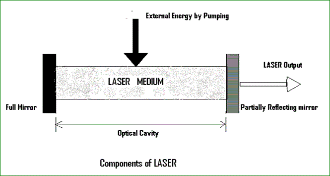

LASER
The acronym LASER stands for Light amplification by stimulated emission of radiation.
It is a device which produce lights. These lights have no existence in nature. The lights can be produced through a process of optical amplification based on the stimulated emission of electromagnetic radiation. It is different from conventional light in three ways. First, the lights from LASER contains only one color or wavelength-that’s why it is called ‘monochromatic’. Secondly, all the wavelengths are in phase- because of this it is known as coherent. And thirdly, laser light beams are very narrow and can be concentrated on one tiny spot- this property makes it to be known as ‘collimated’. These are also the characteristics of LASER.
For its operation, population inversion is much needed. When a group of atoms or molecules exist with more no electrons in an excited state than in lower energy states, population inversion takes place. Now, when an electron is in an excited state, it may decay to a empty lower energy state. If an electron decays without external influence, emitting a photon, that is known as spontaneous emission. But if the electron is stimulated by a light wave (photon) and to emit a second wave and return to the lower level, then it is known as stimulated emission. Practically in stimulated emission, a photon hits an electron and two photons are produced. Now, if a significant population inversion exists, then stimulated emission can produce significant amplification of light. Photons which are produced in stimulated emission produce coherent light as they have definite phase relationship.
The principle of laser was first discovered by Einstein in 1917 but it was not until 1958 that laser was successfully developed.
It has many important applications. They are used in common consumer devices such as CD and DVD players, printers and scanners. They are used in medicine for surgical purposes and various skin treatments, and in industry for cutting and welding materials. They are used in military and law enforcement devices for marking targets and measuring range. Lasers also have many important applications in scientific research.
Components of LASER
a) Lasing material or active medium.
b) External energy source.
c) Optical resonator.

a) The active medium is excited by the external energy source(pump source) to produce population inversion. In the gain medium that spontaneous and stimulated emission of photons takes place, leading to the phenomenon of optical gain, or amplification. Semiconductors, organic dyes, gases (He, Ne, CO2, etc), solid materials ( YAG, sapphire(ruby) etc.) are usually used as lasing materials and often LASERs are named for the ingredients used as medium.
b) The excitation source, pump source provides energy which is needed for the population inversion and stimulated emission to the system. Pumping can be done in two ways - electrical discharge method and optical method. Examples of pump sources are electrical discharges, flash lamps, arc lamps, light from another laser, chemical reactions etc.
c) Resonator guide basically provides the guidance about the simulated emission process. It is induced by high speed photons. Finally, a laser beam will be generated.
In most of the systems, it consists of two mirrors. One mirror is fully reflective and other is partially reflective. Both the mirrors are set up on optic axis, parallel to each other. The active medium is used in the optical cavity between the both mirrors. This arrangement only filters those photons which came along the axis and others are reflected by the mirrors back into the medium, where it may be amplified by stimulated emission.
Types of LASER
There are many types of LASERs available for different purposes. Depending upon the sources they can be described as below.
A) Solid State LASER:
In this kind of LASERs solid state materials are used as active medium. The solid state materials can be ruby, neodymium-YAG (yttrium aluminum garnet) etc.
B) Gas LASER:
These LASERs contain a mixture of helium and Neon. This mixture is packed up into a glass tube. It acts as active medium. We can use Argon or Krypton or Xenon as the medium. CO2 and Nitrogen LASER can also be made.
C) Dye or Liquid LASER:
In this kind of LASERs organic dyes like Rhodamine 6G in liquid solution or suspension used as active medium inside the glass tube.
D) Excimer LASER:
Excimer LASERs (the name came from excited and dimers) use reactive gases like Chlorine and fluorine mixed with inert gases like Argon or Krypton or Xenon. This LASERs produce light in the ultraviolet range.
E) Chemical LASER:
A chemical laser is a LASER that obtains its energy from a chemical reaction. Examples of chemical lasers are the chemical oxygen iodine laser (COIL), all gas-phase iodine laser (AGIL), and the hydrogen fluoride laser, deuterium fluoride laser etc.
F) Semiconductor LASER:
In these lasers, junction diodes are used. The semiconductor is doped by both the acceptors and donors. These are known as injection laser diodes. Whenever the electric current is passed, light can be seen at the output.
 by
by {kind=link}